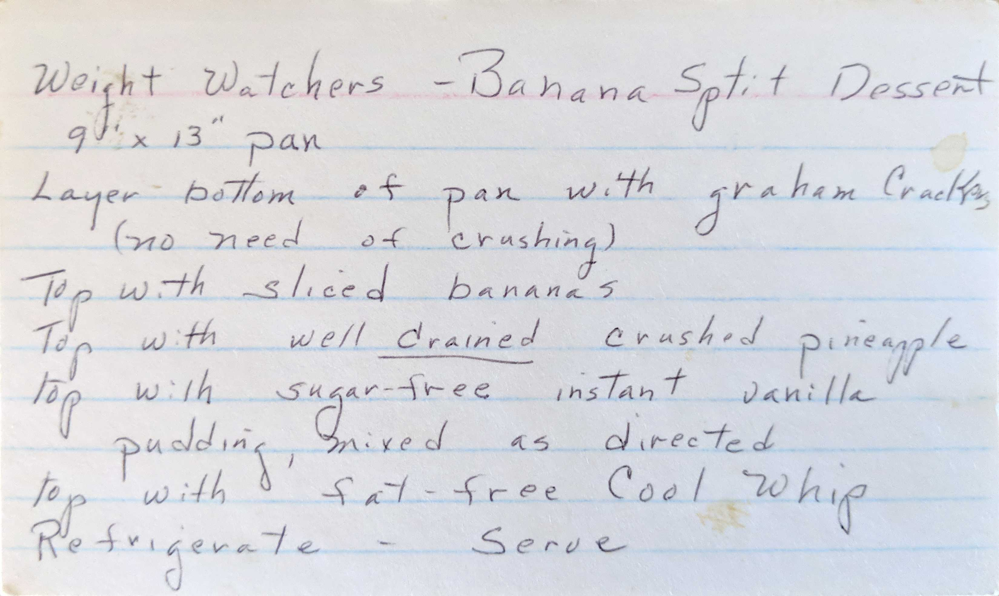

Frozen Yogurt Pie
A cool, light one-step pie, made with your favorite yogurt.
2 containers (8oz each) fruit-flavored yogurt
1 container (8oz) Birds Eye Cool Whip, thawed
1 (6oz) graham cracker pie crust.
Fold yogurt into whipped topping, blending well. Spoon into crust. Freeze until firm. 4 hr. or overnight.
Move to refrigerator at least 30 min. (or longer for softer texture) before cutting. Garnish if desired.
Store any leftover pie in freezer.
I add strawberries to strawberry yogurt